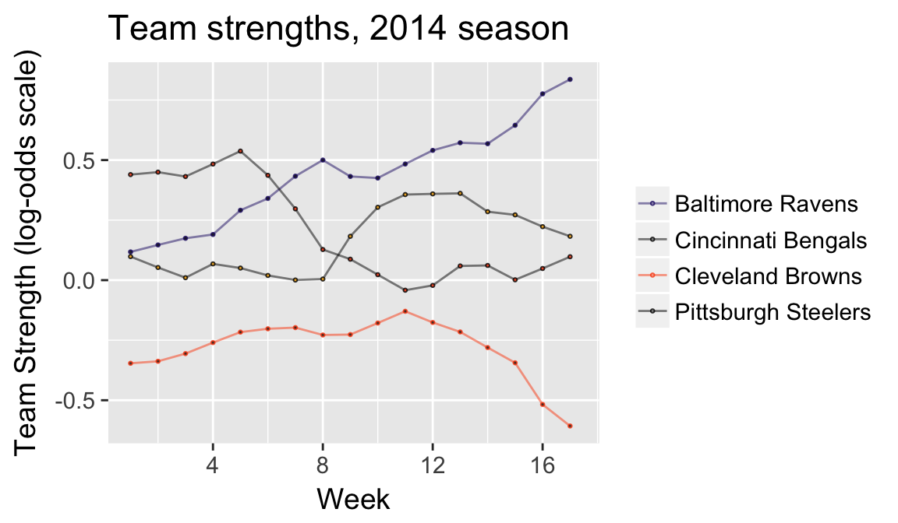
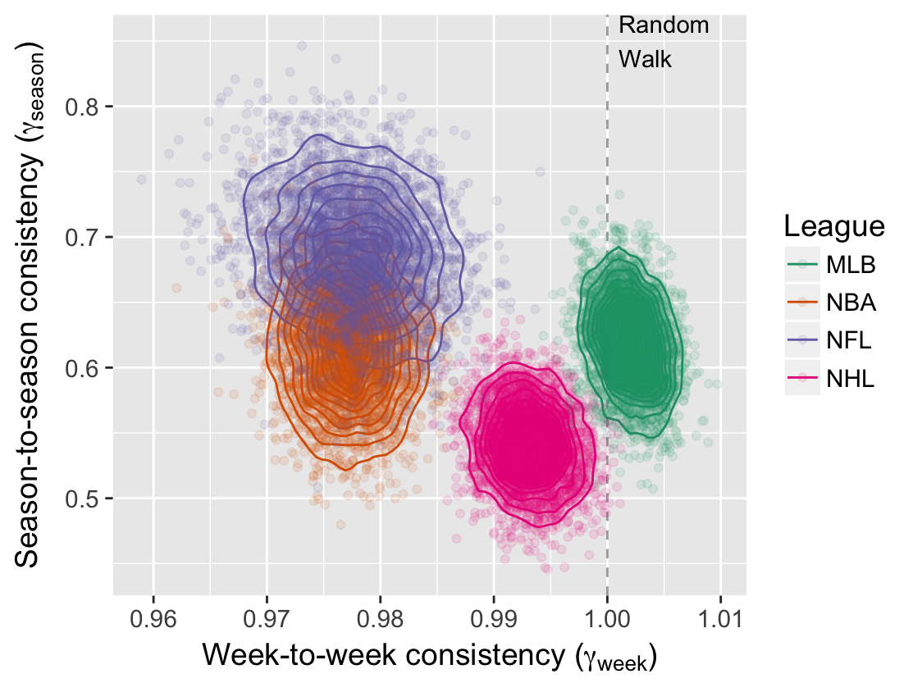
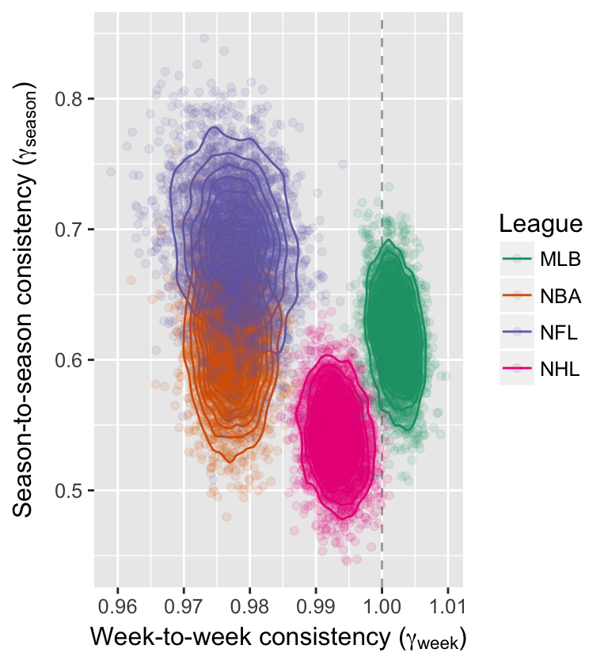
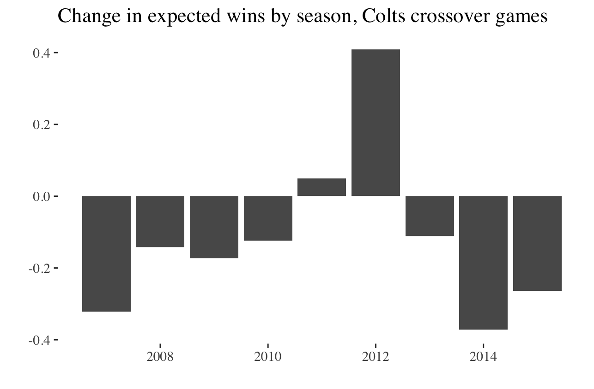
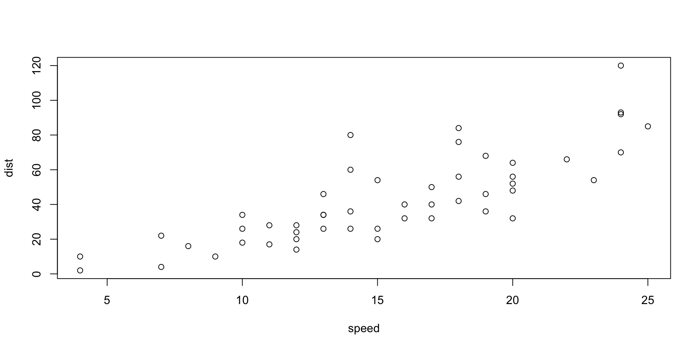

Goals: the NFL’s
There are systems that we have to make sure that we maintain (parity).
Carefully constructed system of competitive balance that makes NFL games and championship races so unpredictable and exciting.
Roger Goodell, NFL commisioner
If you expect something to happen in this league, it’s likely not going to happen.
Jonathan Kraft, President of New England Patriots
Goals: ours
- Develop model to assess parity in professional sports
- Does the NFL have parity?
- How do NFL systems impact league outcomes?
1. Assess parity in professional sports
How to define parity
the state or condition of being equal
Google
1. Assess parity in professional sports
What parity looks like:

1. Assess parity in professional sports
What parity does not look like:

1. Assess parity in professional sports
Parity checklist
- Equality at a fixed time
- Within season equality
- Between season equality
Building a cross-sport model
- \(p_{(q,s,k)ij}\) is probability that team \(i\) will beat team \(j\) in season \(s\) during week \(k\) of sports league \(q\), for \(q \in \{MLB, NBA, NFL, NHL\}\).
- \(\alpha_{q_{0}}\) be the league-wide home advantage (HA) in \(q\)
- \(\alpha_{(q) i^{\star}}\) be the extra effect (+ or -) for team \(i\) when playing at home
- \(\theta_{(q,s,k) i}\) and \(\theta_{(q, s, k) j}\) be season-week team strength parameters
Building a cross-sport model
\[ E[\text{logit}(p_{(q,s,k) ij})] = \theta_{(q,s,k) i} - \theta_{(q, s, k) j} + \alpha_{q_0} + \alpha_{(q) i^{\star}} \]
Assumptions:
- \(\sum_{i=1}^{t_{q}} \theta_{(q,s,k)i} = 0\)
- \(E[\theta_{(i,q,s+1,1)}] = \gamma_{q, season} \theta_{(i, q,s,k)}\)
- \(E[\theta_{(i,q,s,k+1)}] = \gamma_{q, week} \theta_{(i, q,s,k)}\)
- \(\gamma_{q,week}\) and \(\gamma_{q,season}\) week/season level autogressive parameters
Fitting a cross-sport model
Data: 2006-2016 regular season games in MLB, NBA, NFL, NHL via Sports Insights
Priors: Uniform (variance parameters) and Normal (team strength parameters)
Software: rjags package in R statistical software
Draws: 20k iterations, 2k burn in, thin of 5
Team strength results

Team strength results

2. NFL’s parity: equivalence of teams at fixed point in time
How often does the best team win?

2. NFL’s parity: evolution of strength over time

2. NFL’s parity: evolution of strength over time

- NFL matches NBA with low week-to-week consistency
- NFL with highest season-to-season consistency
2. NFL’s parity
Parity checklist
- Equality at a fixed time ❌
- Within season equality ✔️
- Between season equality ❌
3. NFL league characteristics that impact perceived parity
- Small number of games in a season (for a different day)
- Single elimination tournament (for a different day)
- Unbalanced schedule
3. NFLs unbalanced schedule
Decsribe NFL schedule here
3. NFLs unbalanced schedule

3. NFLs unbalanced schedule

3. NFLs unbalanced schedule
A summary
- Small but noticeable effect (+/- 0.15 wins a season)
- Practical significance given 16 game schedule
- Alternative effects: divisional games
- Future work: compare to other sports
Conclusions
Does NFL have parity? Not particularly
Conclusions
Do NFL systems push records to 0.500? Sort of
Acknowledgements: Greg and Ben


Shower
These slides use a template from the shower presentation system. Notable features:
- Works in all modern browsers
- Presentation fully keyboard accessible
- Multiple themes available
- Printable to PDF
Shower [’ʃəuə] noun. A person or thing that shows.
Slide with Plain Text
Let me see your identification. You don’t need to see his identification. We don’t need to see his identification. These are not the droids your looking for. These are not the droids we’re looking for. He can go about his business. You can go about your business.
Move along. Move along. Move along.
Two column layout
What is it? Your fathers lightsaber. This is the weapon of a Jedi Knight. Not as clumsy or as random as a blaster. An elegant weapon for a more civilized time. For over a thousand generations the Jedi Knights were the guardians of peace and justice in the Old Republic. Before the dark times, before the Empire. How did my father die? A young Jedi named Darth Vader, who was a pupil of mine until he turned to evil, helped the Empire hunt down and destroy the Jedi Knights.
Two column layout, text and image
How did I get into this mess? I really don’t know how. We seem to be made to suffer. It’s our lot in life. I’ve got to rest before I fall apart. My joints are almost frozen. What a desolate place this is. Where are you going? 
Two column layout, image and text
How did I get into this mess? I really don’t know how. We seem to be made to suffer. It’s our lot in life. I’ve got to rest before I fall apart. My joints are almost frozen. What a desolate place this is. Where are you going?
Two column layout, independent columns
How did I get into this mess? I really don’t know how. We seem to be made to suffer.
It’s our lot in life. I’ve got to rest before I fall apart.
Lists
- Simple lists are marked with bullets
- Ordered lists begin with a number
- You can even nest lists one inside another
- Or mix their types
- But do not go too far
- Otherwise audience will be bored
- Look, seven rows exactly!
Slide with quote
The bad news is that when ever you learn a new skill you’re going to suck. It’s going to be frustrating. The good news is that is typical and happens to everyone and it is only temporary. You can’t go from knowing nothing to becoming an expert without going through a period of great frustration and great suckiness.
Hadley Wickham?
Slide with R Code and Output
speed dist
Min. : 4.0 Min. : 2.00
1st Qu.:12.0 1st Qu.: 26.00
Median :15.0 Median : 36.00
Mean :15.4 Mean : 42.98
3rd Qu.:19.0 3rd Qu.: 56.00
Max. :25.0 Max. :120.00
Slide with R Code and Output

Tables
| Mazda RX4 |
21 |
6 |
160 |
110 |
| Mazda RX4 Wag |
21 |
6 |
160 |
110 |
| Datsun 710 |
22.8 |
4 |
108 |
93 |
| Hornet 4 Drive |
21.4 |
6 |
258 |
110 |
| Hornet Sportabout |
18.7 |
8 |
360.0 |
175 |
| Valiant |
18.1 |
6 |
225.0 |
105 |
| Duster 360 |
14.3 |
8 |
360.0 |
245 |
Pictures

And text on top of them.
Lists item by item
- Lets you reveal list items one by one
- To keep some key points
- In secret from audience
- But it will work only once
- Nobody wants to see the same joke twice